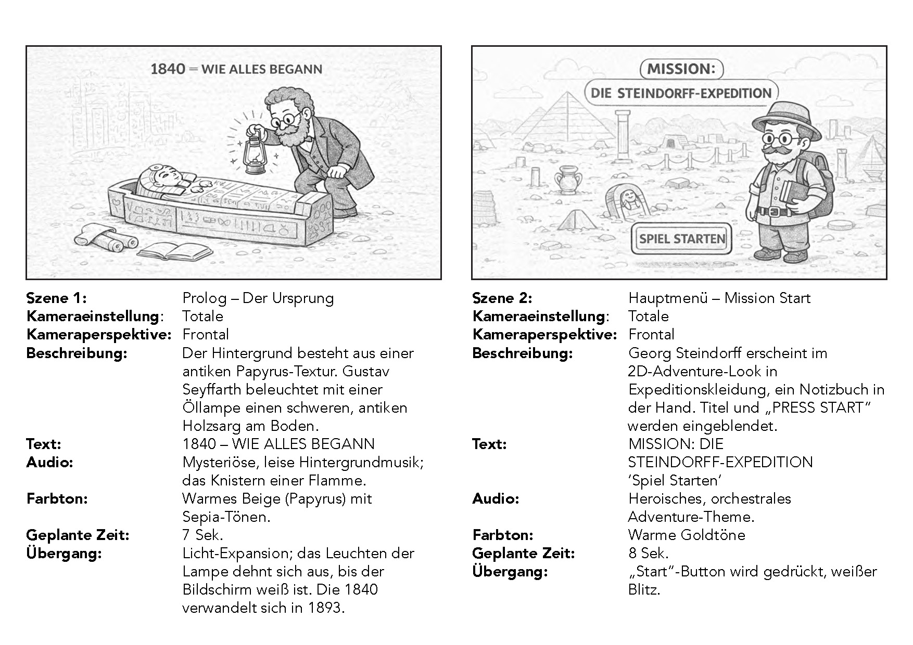
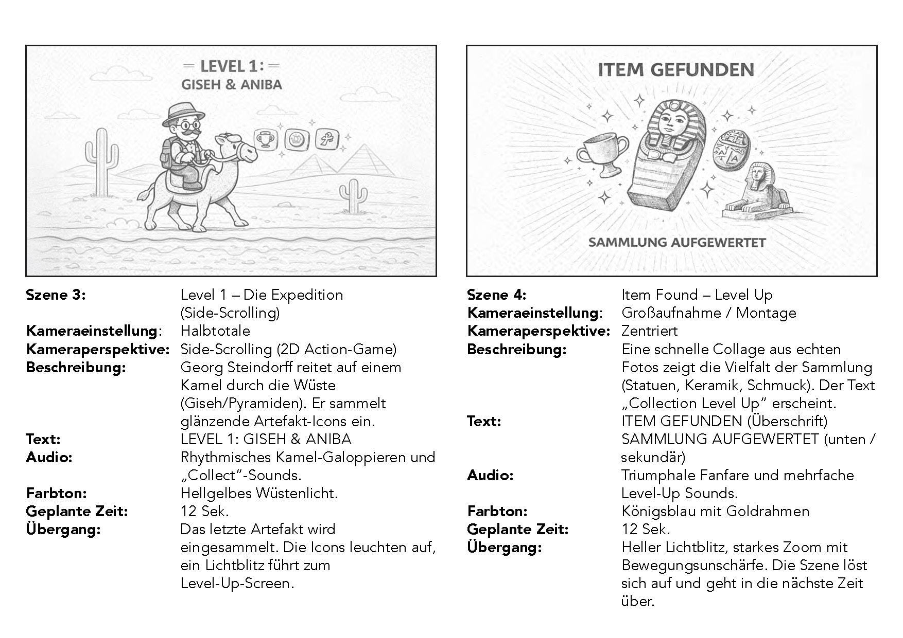
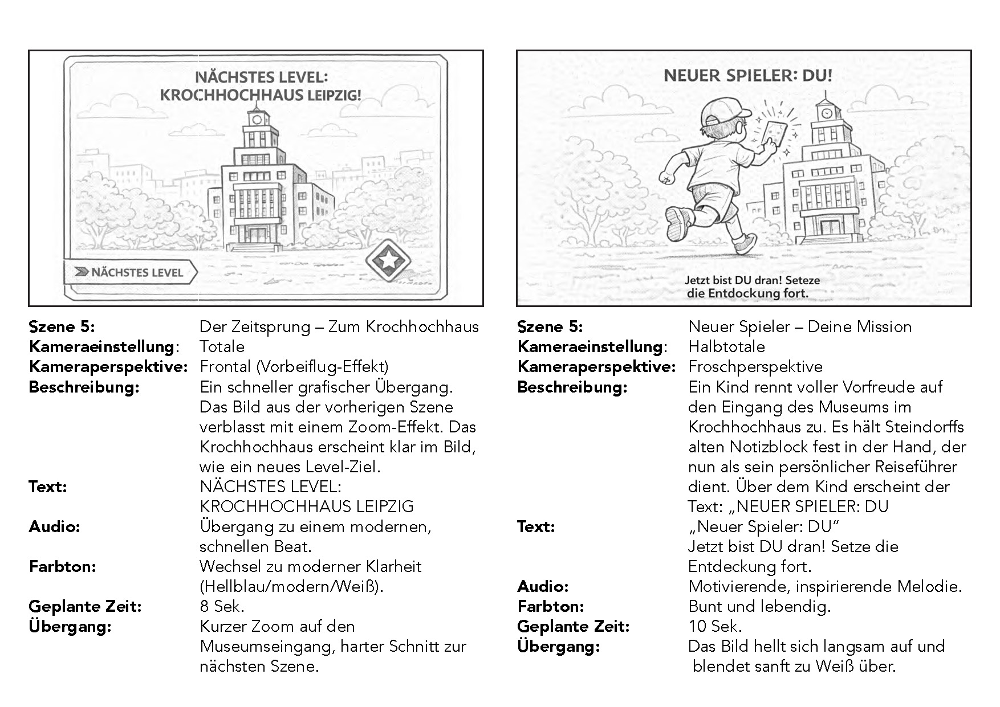
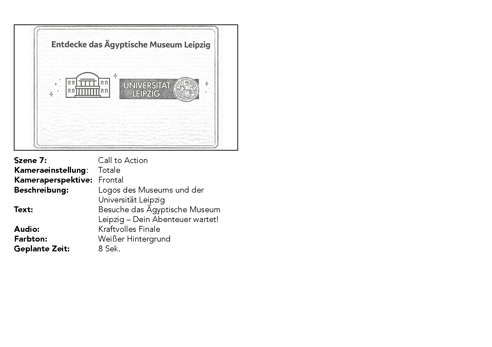

1. Storyboard & Scene Planning (4 Pages)
Complete scene-by-scene storyboard outlining camera angles, transitions, sound direction, and color palettes. Click any page preview to view in detail, or download the original document below.

Page 01: Prologue & Title Screen

Page 02: Side-Scrolling Level

Page 03: Time-Jump to Leipzig

Page 04: New Player & Call to Action